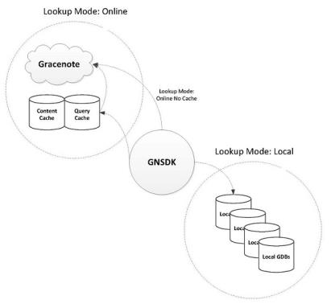

An application can perform local or online lookups as shown in the following diagram.

A lookup provider is a module that implements the ability to query data for matches. GNSDK for Desktop allows both local and online lookup providers to be enabled at run-time, and you can use lookup modes to configure how they will be used.
If the application supports an online connection, by default, GNSDK for Desktop enables an online lookup provider that connects to the Gracenote Service. To enable other lookup providers, you can initialize a gnsdk_lookup module. For example, to enable the local lookup provider, call the gnsdk_lookup_local_initialize() function.
A storage provider is a module that implements storage for the entire SDK. GNSDK for Desktop allows various storage providers to be enabled at run-time. There are currently two storage providers available in GNSDK for Desktop: one implemented using SQLite, and one using QNX's QDB.
By default, no storage provider is enabled. To enable a storage provider, you can initialize a gnsdk_storage module. For example, to enable the SQLite storage provider, call the gnsdk_storage_sqlite_initialize() function.
GNSDK for Desktop allows you to determine whether lookups will be done locally or online, by setting lookup modes. Lookup modes affect the following types of local storage:
The lookup mode options allow an application to switch between the two main lookup providers (local and online). GNSDK for Desktop is designed to operate exactly the same way in either mode, providing identical behavior whether operating locally or online.
GNSDK for Desktop supports the following lookup mode options:
For example, the following call sets the user lookup option so that lookups are performed locally:
gnsdk_manager_user_option_set(
user_handle,
GNSDK_USER_OPTION_LOOKUP_MODE,
GNSDK_LOOKUP_MODE_LOCAL
);
Your application can use GNSDK_USER_OPTION_CACHE_EXPIRATION option to set the length of time before a cache lookup times out.
The local and online modes are the standard modes for applications to choose between. The other online options (NOCACHE, NOCACHEREAD, and CACHEONLY) are variations of the online mode. These additional online lookup modes give more control over when the SDK is allowed to perform a network connection and how to use the online-query cache. The online-query cache is used as a performance aid for online queries. If no storage provider is present, no online-query cache will be utilized.
Note: The lists cache is used as both an online-query cache and a local database for locale and list loading requests.
The following sections show the different lookup modes and their behavior:
Queries are done using a local lookup provider.
Queries are done using an online lookup provider.
Queries are done using an online lookup provider.
Queries are done using an online lookup provider.
Queries are done using an online lookup provider.
Note: Queries using GNFPX fingerprints are not cached locally.
If the application doesn’t set a lookup mode option, GNSDK for Desktop sets a default lookup mode. The default is GNSDK_LOOKUP_MODE_ONLINE, unless the GNSDK for Desktop license file limits all queries to be local-only, which prevents the SDK from connecting online. When this limit is set in the license file, the lookup mode defaults to GNSDK_LOOKUP_MODE_LOCAL.
You can set the lookup mode as a user option or set it separately for individual queries as an option on the query handle. Setting the GNSDK_USER_OPTION_LOOKUP_MODE option for a user handle applies to all queries using the user handle. You can override this for a specific query by setting the equivalent query handle option.
For example, you can override the setting for a music query by setting the GNSDK_MUSICID_OPTION_LOOKUP_MODE option. The query handle option uses the same option value keys as the user handle option.
Your application can switch between local and online lookups, as needed. For example, the following pseudocode shows how to do a local Album TOC lookup using MusicID APIs, followed by an online lookup for cover art using Link APIs:
/* Local TOC lookup using MusicID musicid_option_set(MODE_LOCAL) musicid_toc_set(toc) musicid_find_album(&album_gdo) /* Online cover art lookup using Link link_option_set(MODE_ONLINE) link_set_gdo(album_gdo) link_retrieve_content(cover)
Related Information